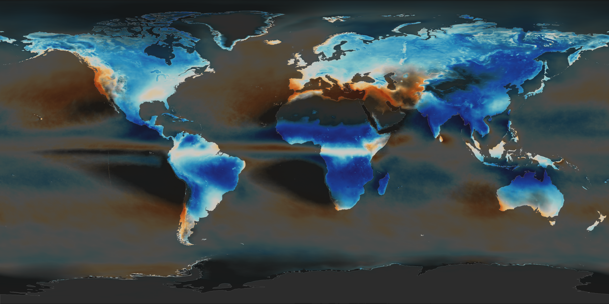

Average rain and snow per month, 2001 to 2022, from NASA's IMERG monthly climatology (0.1° grid).
Summer vs winter compares June to August with December to February, swapped south of the equator, and faded to even within 3° of it. Its colours fade where the year has under about 400 mm.
The sea is dimmed in both views.